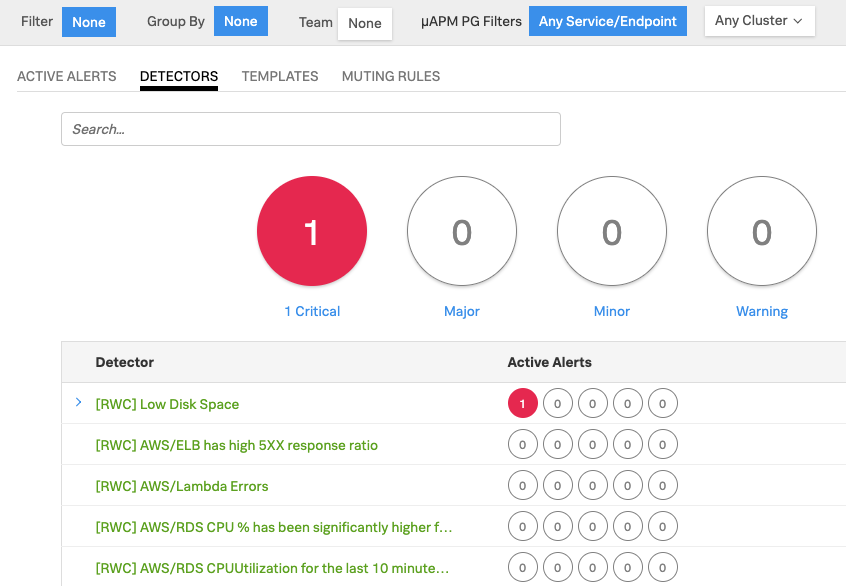

Using Terraform for charts and dashboards
Lab Summary¶
- Install Terraform and initialise the SignalFx Provider.
- Run Terraform to create SignalFx detectors and dashboards from code using our Terraform provider.
- See how Terraform can also delete detectors and dashboards.
1. Initial setup¶
Download and install Terraform for your platform - https://www.terraform.io/downloads.html (min. requirement v. 0.12.18)
Download the SignalFx Jumpstart Terraform master zip file, unzip the file and change into the signalfx-jumpstart-master directory
curl -LO https://github.com/signalfx/signalfx-jumpstart/archive/master.zip
unzip master.zip
cd signalfx-jumpstart-master
Initialise Terraform. Note: You will need to run this command each time a new version of the Terraform Provider is released. You can track the releases on GitHub.
terraform init -upgrade
Upgrading modules...
- aws in modules/aws
- azure in modules/azure
- docker in modules/docker
- gcp in modules/gcp
- host in modules/host
- kubernetes in modules/kubernetes
- parent_child_dashboard in modules/dashboards/parent
- pivotal in modules/pivotal
- usage_dashboard in modules/dashboards/usage
Initializing the backend...
Initializing provider plugins...
- Checking for available provider plugins...
- Downloading plugin for provider "signalfx" (terraform-providers/signalfx) 4.18.6...
The following providers do not have any version constraints in configuration,
so the latest version was installed.
To prevent automatic upgrades to new major versions that may contain breaking
changes, it is recommended to add version = "..." constraints to the
corresponding provider blocks in configuration, with the constraint strings
suggested below.
* provider.signalfx: version = "~> 4.18"
Terraform has been successfully initialized!
You may now begin working with Terraform. Try running "terraform plan" to see
any changes that are required for your infrastructure. All Terraform commands
should now work.
If you ever set or change modules or backend configuration for Terraform,
rerun this command to reinitialize your working directory. If you forget, other
commands will detect it and remind you to do so if necessary.
Create a new workspace, replace {WORKSPACE_NAME} with what you want your workspace to be called:
terraform workspace new {WORKSPACE_NAME}
Created and switched to workspace "my_workspace"!
You're now on a new, empty workspace. Workspaces isolate their state,
so if you run "terraform plan" Terraform will not see any existing state
for this configuration.
2. Create an execution plan¶
Review the execution plan. Replace {YOUR_INITIALS} e.g. -var=”sfx_prefix=RWC”
terraform plan -var="access_token=abc123" -var="realm=us1" -var="sfx_prefix={YOUR_INITIALS}"
Where access_token is the SignalFx Access Token and realm is either eu0, us1 or ap0. If the plan executes successfully, we can go ahead and apply:
3. Apply actions from execution plan¶
terraform apply -var="access_token=abc123" -var="realm=us1" -var="sfx_prefix={YOUR_INITIALS}"
Validate that the detectors were created, under the ALERTS → Detectors, you should see a list of new detectors with the a prefix of your initials:

4. Destroy all your hard work¶
You will first need to ensure you are in the correct workspace, replace {WORKSPACE_NAME} with the name created in the initial setup)
terraform workspace select {WORKSPACE_NAME}
Destroy all Detectors and Dashboards that were previously applied.
Note
The var=”sfx_prefix={YOUR_INITIALS}” is not required!
terraform destroy -var="access_token=abc123" -var="realm=us1"
Validate all the detectors have been removed by navigating to ALERTS → Detectors